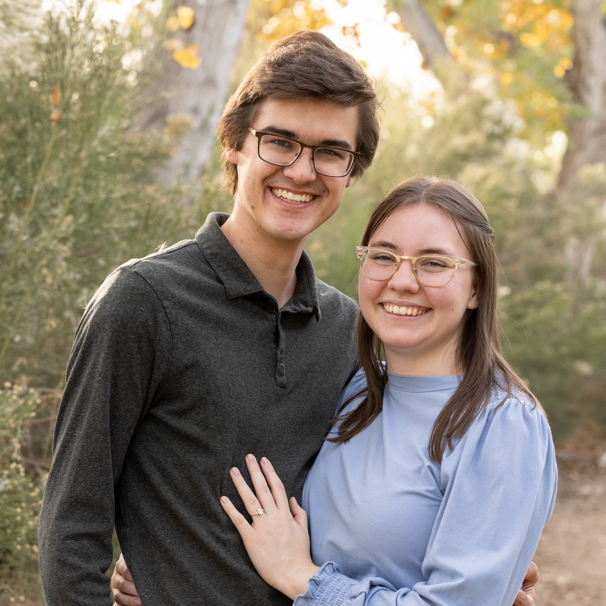

About Me
Last updated on June 18, 2026
I’m Matthew Ward, a recent graduate of the Applied and Computational Mathematics Emphasis (ACME) program at Brigham Young University. Now I’m starting my Master’s in mathematics at BYU with Dr. Kevin Miller, studying theory and algorithms for data-efficient machine learning.
I was previously a data engineer intern working on Geiger-mode lidar at 3DEO, Inc. and a member of the BYU Biophysics Group. In both positions I gained significant experience working with 3-dimensional image data.

My wife and I
When I’m not studying, I like to sing my wife songs at the piano. She and I enjoy playing strings together and spending time in the beautiful outdoors here in Utah.